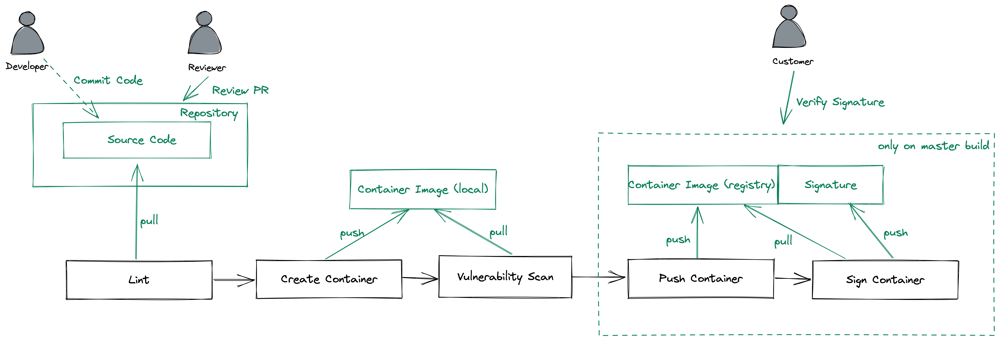
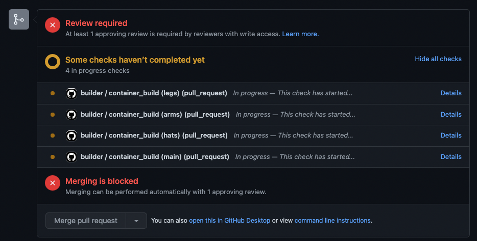

What You'll Learn

- Set up an CI Pipeline using GitHub Actions
- Going through an PR workflow
- Doing some static code analysis
- Build a container
- Do vulnerability scans on your containers
- Sign the containers and verify the signature
Create a fork of this repository
- Navigate to https://github.com/fhb-codelabs/sample-code-repo and click "Fork"
- Select the Account or Organization in which the fork should be created
- Afterwards you should have got a fork of this repository in your account
(Optional) Check out your Fork
- Open a shell
- Change to the directory, in which the repository should be cloned
- Clone the repository (replace fhb-codelabs against your username/org).
git clone https://github.com/fhb-codelabs/fhb-codelabs.github.io.git
- Click on Settings -> Branches
- Use "Branch Protection Rules" -> Add Rule
- Branch Name Pattern:
master - Check "Require a pull request before merging"
- Require approvals
- Check "Require status checks to pass before merging"
- Branch Name Pattern:
- Settings -> Manage Access
- Add People
- Add the Name of your Peer
- Add to the Repository
- Afterwards your colleague should get an invitation, please accept
- Now your colleague should have some more permissions on your repository
- Settings -> Developer Settings
- Personal Access Token
- Add some Name:
podtatohead-ghcr-token - Choose Permissions:
write:packages
- Generate Token
- Copy your Token
- Go Back to your Repository
- Settings -> Secrets -> Actions
- New Repository Secret
- Name: CR_PAT
- Value:
"insert token here"
- New Repository Secret
- Code -> Add File -> Create File
- Name: .github/workflows/build.yaml
- Add following content
name: builder
on:
push:
branches:
- 'master'
pull_request:
branches:
- 'master'
jobs:
##################################
# Build Artefacts #
##################################
container_build:
runs-on: ubuntu-20.04
strategy:
matrix:
component: [ "legs", "arms", "hats", "main" ]
steps:
- name: Checkout Code
uses: actions/checkout@v2
- name: Login to GitHub Container Registry
if: ${{ github.ref == 'refs/heads/master' || github.ref == 'refs/heads/release-*' }}
uses: docker/login-action@v1
with:
registry: ghcr.io
username: ${{ github.repository_owner }}
password: ${{ secrets.CR_PAT }}
- name: Lint
uses: golangci/golangci-lint-action@v2
with:
version: v1.29
working-directory: ${{ matrix.component }}
- name: Build
id: docker_build
uses: docker/build-push-action@v2
with:
build-args: |
context: ${{ matrix.component }}/.
push: false
file: ${{ matrix.component }}/docker/Dockerfile
platforms: linux/amd64
tags: |
ghcr.io/${{ github.repository_owner }}/podtato-${{ matrix.component }}:${{ github.sha }}
- Push directly to master, create a useful commit message
- This lints some code and creates container images. If everything is ok, we can build and push our containers
- Our github actions should run now
- Click on "Actions" in the Code Repository
- You should see a workflow using the name of your commit message
There's an issue

- Let's fix this issue in the code
- After the issue is fixed, commit the fix and the pipeline will re-run
First success
- When clicking on the workflow -> show all -> container_build (main) you should see a similar output (Lint step):

- Switch to your peers repository
username/sample-code-repo - Click on "master"

- Type "feature/add_vulnerability_scan"
- Create Branch "feature/add_vulnerability_scan"
- Switch to that branch
- Open the build.yaml of your peers repository in the branch "feature/add_vulnerability_scan"
- Switch to the branch after opening the workflow file
- Add the following part after the build step of your workflow:
- name: Run Trivy vulnerability scanner
uses: aquasecurity/trivy-action@master
with:
image-ref: 'ghcr.io/${{ github.repository_owner }}/podtato-${{ matrix.component }}:${{ github.sha }}'
format: 'table'
exit-code: '1'
ignore-unfixed: 'true'
vuln-type: 'os,library'
severity: 'CRITICAL,HIGH'
- Click on "Start commit"
- Create a useful commit message
- Commit to the feature/add_vulnerability_scan branch
- If you click on "Actions" now, nothing should happen
- Click on "Pull requests" in your peers repository
- You should see something similar to this:

- Select "Compare & Pull request"
- Select
masteras base for that pull request - Type "Implement Vulnerability Scanning" as the name of the PR
- You should now see following things in the PR overview 
- As we instructed our workflow to automatically build on pr and defined that all actions have to pass before merging, merging is blocked now
Another Issue
- In the actions screen, our workflow should show up and we should see an error while running the workflow

- It seems like we are using something insecure, let's fix this error (take a look on outdated things) and push this to the repository
Successful Build
- After a few minutes, we see that "All checks have passed"
- When taking a look to the triggered pipeline the result for the trivy step should look like this:

- Now it's time for your peer to approve your pull request (and for you to approve the other one)
- Open your git repository
- Click on pull requests
- Take a look on the pull request of your peer
- Check if all checks were running
- "Add your review"
- Validate the code carefully
- Review changes
- "LGTM"
- Approve
- Submit Review
- After that, the PR is in the following state:

- Merge pull request
- You can delete the branch now
Start a VM in AWS
Create a security group for SSH
aws ec2 create-security-group --group-name ssh-in --description "SSH Traffic to Instances"
aws ec2 authorize-security-group-ingress \
--group-name ssh-in \
--protocol tcp \
--cidr 0.0.0.0/0 \
--port 22
Create an Instance
aws ec2 run-instances --image-id ami-087c17d1fe0178315 --instance-type t2.micro --tag-specifications "ResourceType=instance,Tags=[{Key=Name,Value=temporary-instance}]" --key-name vockey --security-groups "ssh-in" --output table
Connect to this instance via SSH
INSTANCE_HOSTNAME=$(aws ec2 describe-instances --filters "Name=tag:Name,Values=temporary-instance" --query "Reservations[].Instances[].PublicDnsName" --out text | xargs)
echo "ssh -i ~/.ssh/labsuser.pem ec2-user@${INSTANCE_HOSTNAME}"
ssh -i ~/.ssh/labsuser.pem ec2-user@${INSTANCE_HOSTNAME}
Download cosign
wget https://github.com/sigstore/cosign/releases/download/v1.2.1/cosign-linux-amd64
chmod a+x cosign-linux-amd64
Generate your key pair
./cosign-linux-amd64 generate-key-pair
Enter password for private key:
Enter password for private key again:
- Generate a password and enter it there
- Afterwards you should store the public key in the GitHub Repo for verification purposes
- Take the output of
cat cosign.puband store it in your git repository in.github/workflows/cosign.pub. You can do the same thing for the private keycosign.key(use a strong passphrase) to be able to sign in your github actions
Add the passphrase to GitHub
- In GitHub
- Settings -> Secrets -> Actions
- New Repository Secret
- Name:
COSIGN_PASSWORD - Value:
insert token here
- Name:
- New Repository Secret
- Firstly, add the cosign installer after the "Checkout Code" Block of your pipeline
- uses: sigstore/cosign-installer@main
with:
cosign-release: 'v1.0.0'
- Add a build and push step to the pipeline
- name: Build
id: docker_build_push
uses: docker/build-push-action@v2
with:
build-args: |
context: ${{ matrix.component }}/.
push: ${{ github.ref == 'refs/heads/master' }}
file: ${{ matrix.component }}/docker/Dockerfile
platforms: linux/amd64
tags: |
ghcr.io/${{ github.repository_owner }}/podtato-${{ matrix.component }}:${{ github.sha }}
- After that, add the signing step to the end of your pipeline
- name: Sign Container
if: ${{ github.ref == 'refs/heads/master' || github.ref == 'refs/heads/release-*' }}
env:
COSIGN_PASSWORD: ${{ secrets.COSIGN_PASSWORD }}
run: cosign sign -key .github/workflows/cosign.key -a GIT_HASH=${{ env.GIT_SHA }} ghcr.io/${{ github.repository_owner }}/podtato-${{ matrix.component }}:${{ github.sha }}
- After the next pipeline run, the images should get signed and the pipeline should be "green"
- Go back to your AWS Instance
- Run the following command
./cosign-linux-amd64 verify -key cosign.pub ghcr.io/<repo>/podtato-main:<your hash>
Verification for ghcr.io/thschue/podtato-main:bdce48dc9c64a1b42fa1ce15474a82a832471773 --
The following checks were performed on each of these signatures:
- The cosign claims were validated
- The signatures were verified against the specified public key
- Any certificates were verified against the Fulcio roots.
[{"critical":{"identity":{"docker-reference":"ghcr.io/<repo>/podtato-main"},"image":{"docker-manifest-digest":"sha256:eb7e3da2cdbcea455fdbfb189e14bb1bde0574de745d9517b5e8feff77302c75"},"type":"cosign container image signature"},"optional":{"GIT_HASH":""}}]